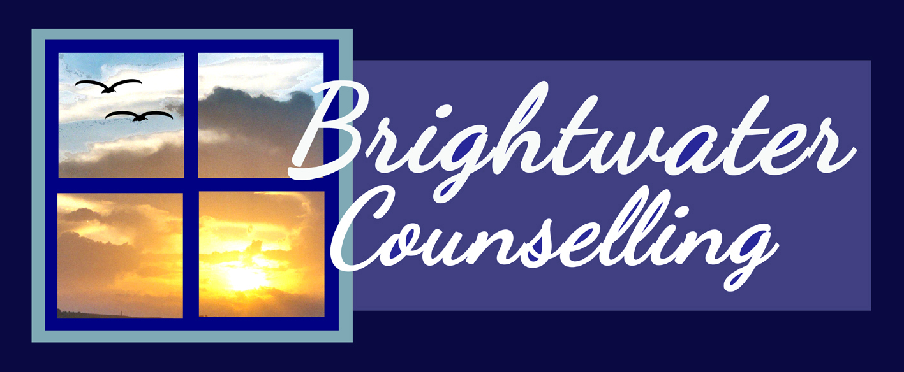
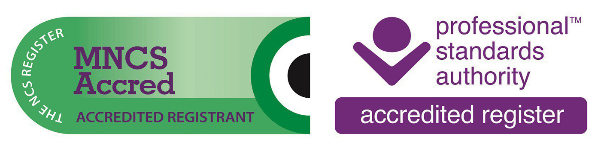

Brightwater Counselling
Psychotherapeutic Counselling in Buckinghamshire, Oxfordshire and Online
About Me
I have spent most of my working life as a professional healthcare provider.
I am now a qualified, fully insured psychotherapeutic counsellor,
I gained my clinical experience working as a counsellor with
Contact Me -
email - brightwatercounselling@gmail.com
phone - 07435 010439
website- www.brightwatercounselling.com

After a difficult and traumatic experience,
I sought help from a therapist - a process which changed my life
and I decided to re-train and change career.
and an accredited member of the National Counselling and Psychotherapy Society.
I follow the NCPS ethical framework for good practice.
I studied Humanistic Psychotherapy at Metanoia Institute for two years
then completed my Diploma with Mercure Counselling and Training Alliance.
I am also a qualified Mental Health First-Aider.
Buckinghamshire Mind and Clean Slate - a charity based in Oxfordshire
who work to support survivors of abuse. Previous to that I had a clinical placement
with Metanoia’s counselling and psychotherapy service (MCPS).